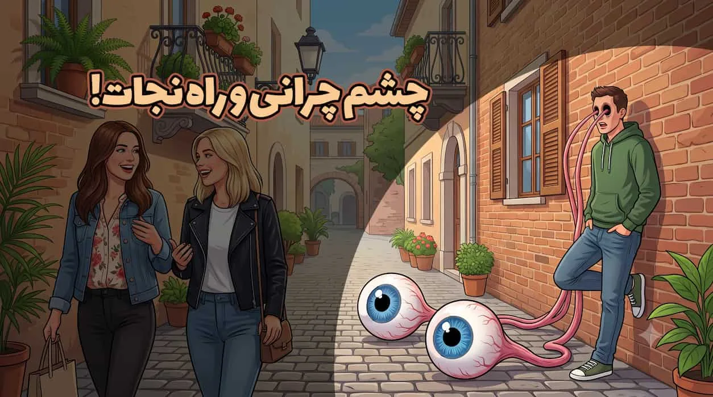
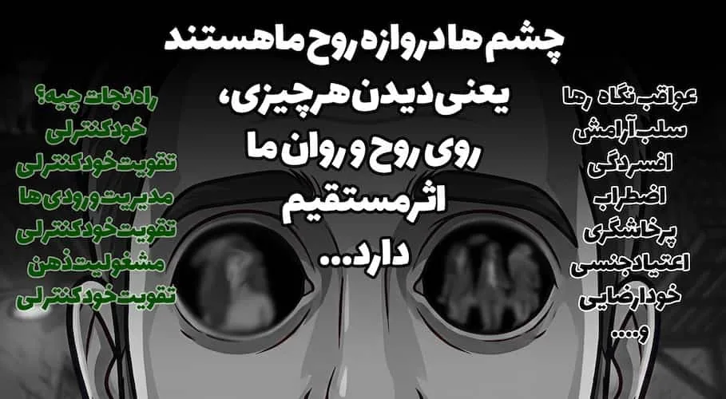
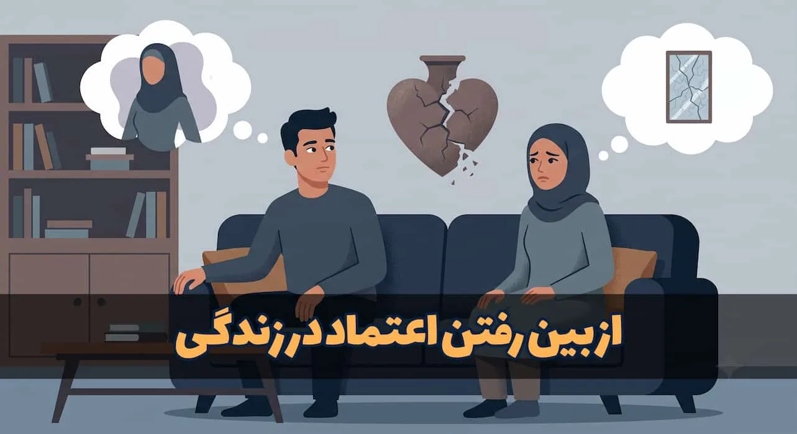
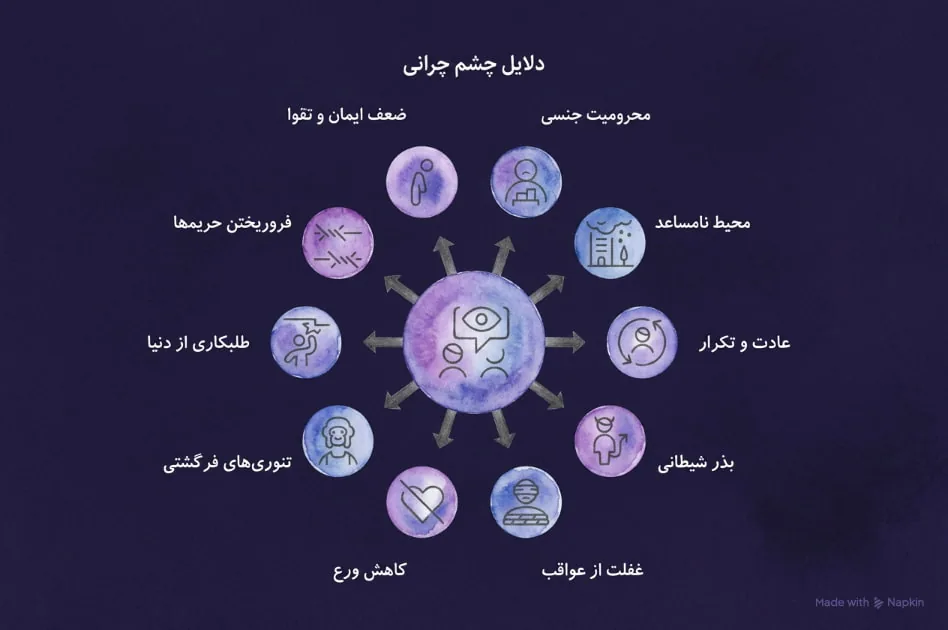
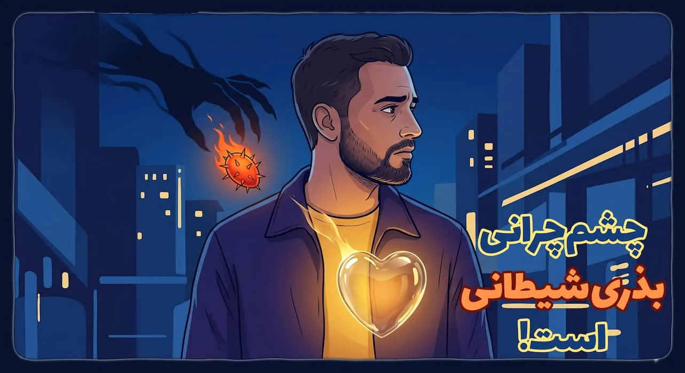
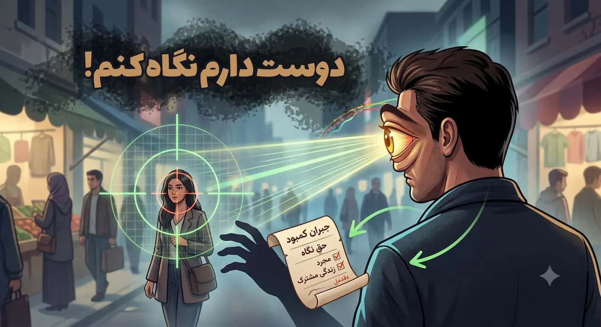

چشم چرانی | ۰ تا ۱۰۰؛ از علت تا راه نجات!

مرز دقیق بین یک «نگاه سالم و طبیعی» با یک «نگاه هیز و مخرب» کجاست؟ بیایید واضح و بدون تعارف حرف بزنیم؛ چشمچرانی صرفاً یک خطای پنهانی نیست، بلکه رفتاری است که قبل از آسیب زدن به بقیه، تمرکز، آرامش روان و پایههای زندگی مشترکِ خودتان را نابود میکند.

خیلیها علت چشم چرانی را عدم ازدواج، فشار غریزه یا فضای مجازی میدانند، اما برای درمان قطعی باید سراغ ریشهی اصلی یعنی ضعف در «خودکنترلی» برویم. در این مقاله، مسئله را در سه سطح بررسی کردهایم:
ابتدا صورتمسئله و عواقب ترسناک این عادت (از افسردگی تا خیانت) را روشن میکنیم؛ سپس ریشههای واقعی آن را بدون بهانهتراشی میشکافیم؛ و در نهایت، راهحلهای کاملاً عملی (از مدیریت ورودیهای ذهن تا تکنیک کنترل نگاه در لحظه) را به شما یاد میدهیم.
علاوه بر این، اگر خودتان درگیر نیستید اما میخواهید رفیق، فرزند، شاگرد یا همسرتان را از این عادت دور کنید، راهکارهای برخورد اصولی با آنها را هم قدم به قدم مشخص کردهایم. با مطالعهی این صفحه و نظرات متخصصانی که در اینجا جمعآوری شده، کاملترین نقشه راه برای حل این مشکل را در دست خواهید داشت.
این مقاله بسیار طولانی و مفصل است، پیشنهاد بنده این است برای رسیدن به جواب خود بر روی فهرست مطالب ضربه بزنید و آن قسمتی که دنبالش هستید رو لمس کنید تا مستقیم به جواب سوال خود برسید. بی معطلی بریم تا چشم چرانی رو موشکافی کنیم.
معنای دقیق چشم چرانی
بیایید قبل از هر چیز، سنگهامون رو وا بکنیم و ببینیم اصلاً وقتی میگیم «چشمچرانی» دقیقاً داریم درباره چی حرف میزنیم؟ چون قضیه توی کشور ما یک تفاوت خیلی مهم با کتابهای روانشناسی غربی داره که کمتر کسی بهش توجه میکنه.
توی زندگی روزمره، همهی ما آدمها وقتی تو خیابون راه میریم، سوار مترو میشیم یا سر کار هستیم، چشممون به بقیه میفته. این یک نگاه طبیعی و گذراست؛ یعنی داری راهت رو میری و چشمت هم میبینه، بدون هیچ نیت خاصی.
اما چشمچرانی یعنی نگاهت رو روی یک نفر قفل کنی، دزدکی براندازش کنی و با نگاهت حریم شخصی اون آدم رو بشکنی؛ طوری که طرف مقابل معذب و کلافه بشه و حس ناامنی پیدا کنه.
نکته اصلی اینجاست: اگر کتابهای روانشناسی غربی رو باز کنی یا حتی نگاهی به قوانین اروپا بیندازیم، معمولاً زمانی به این رفتار میگن «اختلال یا بیماری» که خیلی حاد بشه؛ یعنی فرد بره دزدکی از پنجره خانه مردم نگاه کنه یا از زنان در هنگام عوض کردن عکس و فیلم بگیره (که بهش میگن Voyeurism). در واقع روانشناسی غربی بیشتر به «آسیب آشکار به دیگران» یا «مختل شدن زندگی روزمره افراد دیگر» نگاه میکنه. (منبع)
Voyeurism
Voyeurism is when someone gets sexual pleasure from watching, photographing or recording others doing something that's usually private, for example when they're naked or having sex. Voyeurism is an offence if it is done without the person's permission. The offence includes photographing or filming others for someone else's sexual pleasure.
در حالی که فرهنگ دینی و اسلامی جامعه ما در ایران، ماجرا خیلی ظریفتر و عمیقتر بررسی میشه، چطور؟ دین به «رابطه چشم و دل» نگاه میکنه؛ به عبارت دیگر در نگاه دینی، حتی اگر قربانی متوجه نگاه دزدکی شما نشه و آسیبی هم به ظاهر بهش نرسه، باز هم این کار خطاست.
چرا که دین میگه حتی اگر در خفا و زمانی که هیچکس حواسش نیست، چشمت رو بچرخانی به جایی که نباید، داری به روح و قلب خودت خیانت میکنی و آرامش درونی خودت رو از بین میبری. یعنی ملاک، فقط قانون و آسیب رساندن به بقیه نیست؛ بلکه «سلامت دل و وجدان خودِ فرد» هم شرطه.
یعنی از نظر اسلام چشمچران فقط به بقیه آسیب نمیزنه، بلکه داره به خودش هم آسیب میزنه؛ توی قرآن یک تعبیر تکاندهنده هست به اسم «خائنة الأَعْیُن»؛ یعنی خیانتِ چشمها، این دقیقا به همین موضوع اشاره داره. حالا اینکه چطور چشمچران داره به خودش آسیب میزنه رو کاملتر توضیح میدیم.
پس ما وقتی از رویکرد علمی و دینی حرف میزنیم، یعنی اینکه روانشناسی غربی میگه «مراقب باش صرفا به حریم بقیه تجاوز نکنی، خودت آسیب دیدی مهم نیست»، اما دین یک قدم جلوتر میره و میگه «حتی تو اگر هم دزدکی دید زدی و کسی نفهمید، باز هم اشتباه کردی، چون داری به خودت آسیب میزنی، داری آرامش خودت رو از بین میبری».
حالا که فرق دیدگاه دینی و روانشناسی غربی را فهمیدیم، سراغ دیدگاه کاملتر یعنی دیدگاه دینی میرویم تا بتوانیم دقیقتر مسئله را بررسی کنیم، و به تمام ابعاد ماجرا بپردازیم.
چشم چرانی زن و مرد
خیلیها فکر میکنند چشمچرانی یک خطای کاملاً مردانه است، اما در نگاه دین، کنترل نگاه یک تکلیف دوجانبه است و زن و مرد ندارد؛ هر دو جنس ممکن است به این بیماریِ دل دچار شوند.
در همین باره این کلیپ از استاد سید کاظم روحبخش رو ببینیم:
تنها تفاوت، در شکل این رفتار و اندامهایی است که توجه هر کدام را جلب میکند:
چشم چرانی زن ها
یک زن وقتی اسیر هوای نفس و نگاه حرام میشود، نگاه کشدارش روی هیکل و قدرت بدنی مرد قفل میشود. خانمها در این حالت به اندامهای عضلانی مرد نگاه میکنند؛ یعنی مواردی مثل بازوها، سینههای پهن و تخت، پاهای عضلانی و شکم.
چشم چرانی مرد ها
در مقابل، تمرکز نگاه مردها روی دو بخش است؛ اول زیباییهای ظاهری زن مثل فرم چهره، موها و رنگ پوست، و دوم اندامهای جنسی و برجستگیهای بدنی مثل باسن و سینه.
دین، خیره شدن به این اندامها را خیانت چشم به مرد و زن میداند و آنها را مکلف کرده تا برای حفظ سلامت روح، جسم و زندگیشان، چشمشان را از این محرکها بردارند.
عواقب چشم چرانی
عواقب چشم چرانی به سخنوری استاد دانشمند
بدونید هیچ نگاه حرامی بیهزینه نیست؛ یعنی اینطور نیست که فرد نگاهی بیندازد، لذتی لحظهای ببرد و تمام شود. این رفتار مثل یک اسید، آرامآرام بافت روحی فرد، خانواده و جامعه را از بین میبرد. عواقب این کار را میتوانیم در سه سطح بررسی کنیم:
الف) عواقب فردی (تخریب روح و روان خودِ فرد)
بیقرار شدن دل و از بین رفتن آرامش: وقتی چشم آزاد باشد تا هر چیزی را ببیند، دل دائم در حال طلب کردن است. کسی که چشمچرانی میکند، همیشه مغموم، حسرتزده و دائم در حال دویدن دنبال سراب است، چون هرگز به همهی آن چیزی که میبیند نمیرسد، این یعنی خداحافظی با آرامش روحی.
تاریک شدن دل و سلب توفیق معنوی: چشمچرانی مثل یک لکه سیاه روی قلب مینشیند. فردی که به این کار عادت میکند، دیگر لذتی از عبادت، تمرکز معنوی و ارتباط با خدا نمیبرد، چون خانه دلش توسط آتش این گناه پر از دودههای سیاه شده، پنجره دلش کدر و تار شده، دیگر نمیتواند نور حقیقی را ببیند و تنها چیزی که این دل سیاه طلب خواهد کرد، سیاهی خواهد بود.
افسردگی، پرخاشگری و اضطراب دائمی: فرد چون دائم در ذهن خود در حال مقایسه کردن (مقایسه خودش با دیگران که رابطه حرام دارند، مقایسه همسرش با دیگر دختران و از این جنس مقایسهها) و نرسیدن است (مدام دختر زیبا/پسر خوشتیپ میبینه اما نمیتونه بهش برسه)، دچار یک نوع سرخوردگی پنهان میشود که خودش را به شکل افسردگی، بدخلقی، اضطراب و پرخاشگری در زندگی روزمره نشان میدهد.
این عاقبت کسی است که نگاه میکند و نمیرسد، اما اگر نگاه کرد و جرئت کرد بره به سمت حرام چی؟ اون موقع است که دچار بدبختی بعدی میشه یعنی:
عشق های شیطانی:
به قول معروف:
وقتی چشم رها بکنید، چه بخواهید چه نخواهید دل را هم رها کردید، وقتی دل رها شد، عقل در غل و زنجیر گرفتار خواهد شد، دل کورکورانه دنبال معشوق میگردد، معشوقی که با معیار خودش باشد، نه با معیار عقل. وقتی این معشوق پیدا شد، راه بدبختی هم آغاز خواهد شد.
تعداد کسانی که دل را رها کردند و دارند تاوان عشقهای کورکورانه را پس میدهند، زیاد است که ضربالمثل برایش درست کردند: اگر عاشقانه انتخاب کنی، باید عاقلانه ادامه بدی، اما اگر عاقلانه انتخاب کنی، میتوانی تا آخر، عاشقانه ادامه بدی.
کسی که کورکورانه انتخاب کند باید عاقلانه انتخاب کند، یا باید یک عمر بدبختی را کنار این همسر نامناسب سپری کند، یا باید قید تمام عشق خود را بزند و رهایش کند. به من نگید که خیلیها رو دیدم که با یک نگاه عاشق شدند و الان زندگی خوبی دارند، چراکه درصد این آدمها خیلی کم است، بخت باهاشون یار بوده!
خدا بهشون رحم کرده، خودشون حواسشون بوده خط قرمزی رو زیر پا نذارند و الا این راه اکثرا عشقهای شیطانی و همسرانی نامناسب نصیب رهروان خودش کرده، این راه رقیبان عشقی، قتلهای ناموسی، خیانتها، سقط جنینها، رها کردنها و دل شکستنها نصیب رهروان خودش کرده.
اینکه از هر صد نفر ۱۰ نفر تونستند جون سالم بدر ببرند دلیل نمیشه راه مناسبی برای ارضا میل جنسی محسوب بشه، و سرمنشاء این راه خطرناک، چشم است، نگاه ناپاک.
ب) عواقب خانوادگی (سست شدن بنیان عشق و ازدواج)
امنیت خانوادگی: وقتی مرد یا زن در خیابان و فضای مجازی دائم در حال برانداز کردن دیگران باشند، ناخودآگاه شریک زندگی خود را با آن تصویرهای دستچینشده و هیکلهای عضلانی یا زیباییهای بازسازیشده مقایسه میکنند. نتیجه؟
همسر در نظرشان عادی و کمجذابیت میشود و رابطهی عاشقانه رو به سردی میرود. استاد روحبخش در همین موضوع ویدیویی دارند:
از بین رفتن اعتماد: چشمچرانی یک رفتار دزدکی است و بالاخره همسر متوجه این نگاههای پنهانی یا حواسپرتیهای ذهنی میشود. وقتی اعتماد در خانه ترک بخورد، شک و بدبینی جای آن را میگیرد و آرامش از آن زندگی میرود. چه رابطههایی که به خاطر همین شکاکیتها از بین نرفته، دلی که شک واردش بشه، دیگه به این راحتیها اعتماد برنمیگرده!

خیانت
وقتی نگاه ناپاک زیاد شد، از کنترل خارج شد، دیگه بدن و ذهن ما به صرف یک نگاه قناعت نمیکنه، در واقع بهتره بگم شیطان به این نگاهها قناعت نمیکند. امیرالمومنین علی علیهالسلام میفرمایند چشمها دامهای شیطانند!
از این دامها برای چی استفاده میشه؟ یکی از عواقب چشمچرانی خیانت است! وقتی چشم پر شد از زنان یا مردان جذاب و زیبای در خیابان، مترو، اتوبوس و... دیگر همسر آدم که کل روزش در حال زحمت کشیدن برای زندگی ماست و وقت ندارد به خودش برسد، عادی یا حتی زشتتر به نظر میرسد.
استاد قرائتی در همین موضوع سخنی دارند:
و همین سبب عدم قناعت چشم، چربیدن زور شیطان، عدم مخالفت با هوای نفس و در نهایت منجر به خیانت میشود! عجیبی ماجرا اینجاست که این نوع از خیانت فقط مختص آقایان نیست، بلکه طبق آمار، در این چند سال اخیر آمار خیانت زنان به شوهران در حال افزایش است.
اما آیا این دام شیطان فقط به همین یک مورد ختم میشود؟ خیر، عواقب خیلی وحشتناکتری هم وجود دارد: عشقهای شیطانی، روابط بدون تعهد، زنا، فرزندان ناپاک یا حتی قتل که یا به صورت سقط جنین، یا به صورت خودکشی یا کشتن فرد دیگر مثل رقیب عشقی است، همه اینها فقط از یک نگاه شروع میشود، نگاهی که هیچوقت جلویش گرفته نشد.
ریشه همه این بدبختیهایی که فقط با یک نگاه شروع میشه دقیقا همین تیر شیطان و بذر شیطانی در دل آدمی است، و چیزی که باعث رشد این بذر میشود، همانطور که گفتم نگاههای دوباره و دوباره و دوباره است.
مکافات عمل یا همان کارما: امام صادق علیهالسلام خطاب به چشمچران میپرسد: آیا کسانی که به پشت زنان نگاه میکنند و چشمان خویش را در پی زنان مردم میاندازند، نمیترسند که زنانشان نیز به مانند چنین رفتاری گرفتار شوند؟! کارما یکی از واقعیتهای بدیهی این جهان ماست، و نمیشه کسی توقع داشته باشه به ناموس مردم به نگاه هوسآلود خودش تعرض بکنه، اما ناموس خودش از امثال خودش در امان باشه.
ج) عواقب اجتماعی (ناامن شدن فضا برای همه)
از بین رفتن حریم امن جامعه: خیابان، مترو و محل کار باید جای زندگی و فعالیت عادی باشد. وقتی چشمچرانی زیاد شود، افراد (چه زن و چه مرد) احساس میکنند دائم زیر ذرهبین هستند و به حریمشان تجاوز میشود. این حسِ «شیءانگاری» و کالا بودن، امنیت روانی جامعه را نابود میکند.
حقالناس و شکستن دلها: معذب کردن دیگران با نگاه تند و خیره، صریحاً زیر پا گذاشتن حقالناس است. شما با یک نگاهِ بیمار، ممکن است آرامش ذهنی یک نفر را تا ساعتها در روز خراب کنید و این بار گناه سنگینی دارد.
یا اگر متاهل باشید، با نگاه خیرهتان به جنس مخالف، دل همسرتون رو میشکنید، چراکه تنها کسی که شما رو با تمام خوبیها و بدیها دوست داره همون همسر شماست نه یک فرد دیگه، اما شما با نگاهتون به زن دیگر که از لحاظ ظاهری زیباتر است دارید غیرمستقیم پیام میدهید: که این فرد از همسر من زیباتر است و ارزش دیدن او بیشتر از دیدن همسر خود من است...
چشم چرانی در قرآن
اول این کلیپ از تفسیر قرآن و کتاب راهنما رو از استاد روحبخش ببینیم:
براساس منابع تفسیری، ۳ آیه در قرآن داریم که مستقیما به گناه چشمچرانی اشاره دارند، این سه آیه عبارت است از:
۱. آیه سیام سوره نور (دستور به مردان) این آیه نخستین دستور صریح قرآن در مورد کنترل نگاه است که خطاب به مردان مومن صادر شده است. «قُلْ لِلْمُؤْمِنِینَ یَغُضُّوا مِنْ أَبْصَارِهِمْ وَ یَحْفَظُوا فُرُوجَهُمْ ذَلِکَ أَزْکَى لَهُمْ إِنَّ اللَّهَ خَبِیرٌ بِمَا یَصْنَعُونَ» ترجمه: به مردان مومن بگو چشمان خود را (از نگاه به نامحرم) فروگیرند و دامن خود را حفظ نمایند. این برای پاک ماندن آنان بهتر است. خداوند به آنچه انجام میدهند آگاه است.
واژه «یغضوا» از ریشه «غض» به معنای کم کردن و نقصان است. مفسران تأکید دارند که این آیه دستور به بستن کامل چشمها نمیدهد (چرا که راه رفتن را غیرممکن میسازد)، بلکه دستور به «کوتاه کردن نگاه» و پایین انداختن دیدگان است تا انسان دچار نگاه حرام نشود. [تفسیر قرآن مهر، ج۱۴، ص۱۵۷] [تفسیر نمونه، ج۱۴، ص۴۳۶] [تفسیر نور، ج۶، ص۱۷۱]
یحفظوا فروجهم (دامان خود را حفظ کنند): در حالی که در سایر آیات قرآن «حفظ فرج» به معنای پرهیز از زنا است، در این آیه خاص، بر اساس روایات امام صادق (ع)، منظور «حفظ عورت از نگاه دیگران» (پوشاندن مواضع جنسی) است. [تفسیر نمونه، ج۱۴، ص۴۳۸] [ترجمه تفسیر قمی، ج۳، ص۳۱۵] [تفسیر المیزان، ج۱۵، ص۱۵۵]
ذلک ازکی لهم: رعایت این دستور باعث پاکی و رشد معنوی انسان میشود. [تفسیر قرآن مهر، ج۱۴، ص۱۵۸]
۲. آیه سیویکم سوره نور (دستور به زنان) این آیه پس از خطاب به مردان، همان دستور را با عبارتی مشابه به زنان مومن نیز متوجه میسازد و سپس به جزئیات حجاب میپردازد.
«وَ قُلْ لِلْمُؤْمِنَاتِ یَغْضُضْنَ مِنْ أَبْصَارِهِنَّ وَ یَحْفَظْنَ فُرُوجَهُنَّ ...» ترجمه: و به زنان مومن بگو: چشمانشان را (از نگاه حرام) فروکاهند و دامان (عفت) شان را حفظ کنند... تساوی در حکم نگاه: همانگونه که چشمچرانی بر مردان حرام است، بر زنان نیز حرام است که به مردان نامحرم نگاه هوسآلود یا خیره داشته باشند. [تفسیر نمونه، ج۱۴، ص۴۳۸] [تفسیر کوثر، ج۷، ص۳۹۸]
حفظ فرج برای زنان: مانند مردان، منظور حفظ عورت از نگاه دیگران است. [تفسیر قرآن مهر، ج۱۴، ص۱۵۹]
ادامه آیه (حجاب): پس از دستور کنترل نگاه، آیه به مسائل مربوط به پوشش زینتها، انداختن روسری بر گریبان و موارد استثنایی که زنان میتوانند زینت خود را آشکار کنند (مانند محارم) میپردازد. [تفسیر نمونه، ج۱۴، ص۴۳۵] [تفسیر نور، ج۶، ص۱۷۳]
۳. آیات مرتبط با آگاهی خداوند از نگاهها علاوه بر آیات دستوری سوره نور، آیاتی نیز وجود دارند که به آگاهی خداوند از نگاههای پنهانی و خیانت چشم اشاره میکنند که مفسران آنها را مؤید حرمت چشمچرانی میدانند.
آیه ۱۹ سوره غافر: «یَعْلَمُ خَائِنَةَ الْأَعْیُنِ وَ مَا تُخْفِی الصُّدُورُ» (خداوند از خیانت چشمها و آنچه دلها مخفی میکنند، آگاه است). مفسران «خیانت چشم» را شامل نگاه به نامحرم، نگاه تحقیرآمیز و نگاههای زیرچشمی (نگاه دزدی) میدانند. امام صادق (ع) در تفسیر این آیه فرمودهاند: مراد نگاههای زیرچشمی است؛ یعنی انسان به چیزی نگاه کند و وانمود کند که نگاه نمیکند. [تفسیر نور، ج۸، ص۲۳۴] [فرهنگ قرآن، ج۱۰، ص۳۳۲]
ریشه و علت چشم چرانی
ببینید، برای چشمچرانی علتها و زمینههای زیادی ردیف میکنند؛ از هورمون و ژنتیک گرفته تا جامعه و فضای مجازی. اما بیا یکبار برای همیشه این ریشهها را بررسی کنیم تا ببینیم مقصر واقعی کیست. در آخر هم بهت میگویم کدام مورد، علت اصلی و تامّه است و بقیه یا فقط بهانهاند یا صرفا زمینهسازند نه علت اصلی!

- محرومیتهای جنسی — خیلی وقتها میشنویم که میگویند: «طرف چون مجرد است، شرایط ازدواج ندارد یا نیازش در خانه برطرف نمیشود، چشمچرانی میکند.» این نظریه شاید در ظاهر درست به نظر برسد، اما اصلاً علت کامل و جامع نیست.
سه سوال ساده قضیه را روشن میکند:- سوال اول: مردی که همسری با زیباترین چهره و بهترین اندام دارد، آیا دیگر به هیچ زنی نگاه نمیکند؟ اگر غریزی به مسئله نگاه کنیم، مردها غریزتاً اینطور نیستند.
- سوال دوم: کسی که در چند روز متوالی ۱۰۰۰ فیلم پورن دیده باشد، آیا از دیدن فیلم هزار و یکم منصرف میشود؟
- سوال سوم: فتحعلیشاه قاجار بیش از ۱۰۰۰ زن داشت؛ آیا برای ازدواج با زن هزار و یکم بیمیل بود؟
💡مرد سالم مردی است که با دیدن چند تار مو و چهرهای آرایشکرده وسوسه نمیشود؛ اما هر کسی به این معنا نباید غریزه جنسی خود را دستکم بگیرد یا آن را غریزهای بد بداند — باید پذیرفته شود. استاد روحبخش در ویدیوی زیر به این مسئله میپردازند:علت اصلی چشم چرانی باید یک ویژگی مهم داشته باشد: هر وقت این علت آمد، چشمچرانی هم بیاید و هر وقت رفت، چشمچرانی هم برود؛ در حالی که بسیار کسانی را دیدیم که نه همسر دارند و نه نگاه ناپاک. ملاک دوم این است که همهگیر باشد، نه مخصوص یک قشر خاص. - محیط نامساعد و فرهنگی — وقتی در جامعه، محل کار یا فضای مجازی محرکهای بصری و تصاویر نیمهبرهنه زیاد شود، محیط نامساعد میشود. این محیط کار را سخت میکند و انگیزه گناه را بالا میبرد، اما نمیتواند اراده انسان را به زور سلب کند؛ بسیارند کسانی که در محیط مذهبی رشد کردند و چشمچرانی میکنند، و بسیارند کسانی که در محیط نامساعد زندگی میکنند اما خودکنترلی قوی دارند. پس محیط، علت اصلی نیست.
- عادت و تکرار (بذرپاشی در قلب) — چشمچرانی یکدفعه تبدیل به رفتار دائمی نمیشود؛ از نگاههای کوچک شروع میشود و با تکرار، عادتِ اعتیادآور میشود. امام صادق (ع) میفرمایند: «نگاه پس از نگاه، بذر شهوت را در قلب میکارد».
- بذر شیطانی — شیطان کارش این است که زشتیها را قشنگ جلوه دهد. پیامبر (ص) میفرمایند «نگاه، تیر زهرآلودی از تیرهای شیطان است». اما چون افراد زیادی با وسوسههای شیطان مقابله میکنند، این هم علت تامه نیست؛ چون وسوسه شیطان ممکن است باشد ولی چشمچرانی نباشد.

- غفلت از عاقبت کار (کوری لحظهای) — امام علی (ع): «هنگامی که چشم شهوت را ببیند، قلب از عاقبت کار کور میشود». اما خیلیها با علم به عاقبت خطرناک کار، باز هم ادامه میدهند، پس این هم علت اصلی نیست.
- کاهش ورع و پرهیزگاری (مرگ تدریجی قلب) — ورع با تقوا فرق دارد؛ تقوا یعنی انجام ندادن حرام و انجام واجب، اما ورع یعنی حتی نزدیک نشدن به حرام. امام علی (ع) درباره ورع فرمودند: «الْوَرَعُ الْوُقُوفُ عِنْدَ الشُّبْهَهِ». اما باز هم افرادی هستند که ورع ندارند اما تقوا را حفظ میکنند و چشمچرانی نمیکنند، پس این هم علت تامه نیست.
- تئوریهای فرگشتی و عادات باستانی (فرضیه مردود) — نظریهای غربی که چشمچرانی را به عادت باستانیِ جفتیابی برای تولیدمثل نسبت میدهد، نه از نظر دینی و نه علمی اثبات نشده، و امروز آن هدف باستانی از بین رفته؛ علت نگاه امروز کاملاً هوسی است، نه نگاه به نسل قویتر. این تئوری حتی جزو علتهای درست هم محسوب نمیشود.
- طلبکاری از دنیا و حسِ «محق بودن» — گاهی ریشه چشمچرانی یک زیادهخواهی و طمع درونی است؛ فرد فکر میکند چون مجرد است یا کمبودی دارد، «حق دارد» با نگاه کردن این کمبود را جبران کند. این محقپنداشتنِ خود نوعی خودخواهی است که ریشهاش با خودِ چشمچرانی یکی است، پس نمیتواند علت اصلی آن باشد؛ هرچند زمینهساز قویای است.

- فروریختن حریمها در روابط فامیلی و دوستانه — گاهی این بیماری از شوخیهای بیجا و راحتبودنهای افراطی با نامحرم در فامیل یا محل کار شروع میشود. اما این مورد هم شامل همه نمیشود؛ خیلیها در چنین خانوادههایی رشد کردند اما خطوط قرمز را رعایت کردند.
- ضعف ایمان و تقوا — این همان دلیل اصلی و علت تامه است. اگر تمام زمینهسازهای قبلی برای کسی رخ دهد، تنها چیزی که او را نجات میدهد تقوای او و ترس از خداست، نه چیز دیگر. با از بین رفتن ورع، لزوماً همه چشمچرانی نمیکنند، اما با از بین رفتن تقوا، همه چشمچرانی میکنند — این غیرممکن است که کسی نیاز جنسی داشته باشد، تقوا هم نداشته باشد، و چشمچرانی هم نکند.
پیامبر (ص): «نگاه، تیر زهرآلودی از تیرهای شیطان است؛ پس هر کس آن را از ترس خدا ترک کند، خداوند ایمانی به او عطا میکند که شیرینی آن را در قلبش مییابد».
یک بار دیگر متذکر میشوم، عوامل دیگر بعضا زمینهسازهای قویای هستند برای چشمچرانی، و اگر کسی به خاطر این زمینهها درگیر چشمچرانی بشود، هیچکس حق سرزنش او را ندارد؛ اینهمه گفتیم تا یک نکته مهم را یاد بگیریم: علت اصلی و پایهثابتِ بلاها اول خودِ فرد است، بعد بقیه عوامل. کسی که مدام بهانه بیاورد و گناهش را تقصیر شرایط بیندازد، هیچوقت رشد نمیکند؛ اما کسی که بفهمد با کار روی خودش میتواند جلوی گناهان بایستد، مقصر اول را همیشه خودش میبیند.
راه نجات از چشم چرانی
برای رسیدن به موفقیت و رهایی از چشمچرانی، تنها راه نجات؛ غض بصر، یا همان بستن چشمهاست. یعنی وقتی ما به یک صحنهای در فیلمها، در اکسپلور اینستاگرام، در خیابان، مهمانیها و... باید سریع چشمها رو ببندیم، یا هدایتشون کنیم به یک سمت دیگر، باید کاری کنیم که اون صحنه دیگر در دایره دید ما نباشد!
در روایات، این نگاهها به نگاه اول و دوم تعبیر شده است. نگاه اول همان افتادن اتفاقی چشم به صحنه است که مشکلی ندارد، چون در اکثر موارد بیاختیار اتفاق میافتد. اما نگاه دوم — که ادامهدار شدن آن نگاه و برانداز کردن است — دیگر جائز نیست و از نظر اسلام حرام است.
خداوند میفرماید: «قُلْ لِلْمُؤمِنِینَ یَغُضُّوا مِنْ أَبْصَـرِهِمْ... وَ قُلْ لِلْمُؤمِنَاتِ یَغْضُضْنَ مِنْ أَبْصَـرِهِنَّ» — به مردان و زنان مومن بگو چشمهایشان را حفظ کنند. گاهی وقتها اینقدر عواقب چشمچرانی وحشتناک است که خدا از آن به «خیانت چشمها» تعبیر میکند (یَعْلَمُ خَائِنَةَ الْأَعْیُنِ وَمَا تُخْفِی الصُّدُورُ).
خداوند کاملا به نگاه شما و نیت شما آگاه است، پس بیایم بهانهها رو بذاریم کنار و بریم سمت درست زندگی کردن. حالا برای اینکه بتونیم راحتتر چشممون رو نگه داریم، چند مورد به عنوان راه نجات مطرح میشوند:
ازدواج
اگر متاهل نیستید و میخواهید از چشمچرانی خلاص بشید، یکی از موثرترین راهها ازدواج هست؛ ازدواج یک بستر آرامش و یک «سپر دفاعی» است که فشار طبیعیِ غریزه را کم میکند.
باید بدانیم که تمرین کنترل چشم باید قبل از خواستگاری شروع بشود، چون ازدواج راه حل قطعی نیست؛ ازدواج راهِ پاسخ به نیاز است، نه راهِ درمانِ حرص و چشمچرانی. اگر کسی قبل از ازدواج چشمش را تربیت نکرده باشد، بعد از ازدواج هم همچنان درگیر این عادت خواهد بود.
اگر چشمچرانی از سر نیاز است، ازدواج راه خوبی است؛ اما اگر از سر حرص و طمع باشد، ازدواج راه خوبی برای درمان نیست.
این کلیپ از استاد سید کاظم روحبخش در مورد ازدواج آسان رو ببینیم:
در نهایت، اولا ازدواج تنها راه نیست، و دوما محصولات و دورههای زیر برای موضوع ازدواج تدارک دیده شده است:
دوره های ازدواج
تقوا و یاد خدا
خداوند میفرماید: «وَأَنْكِحُوا الْأَيَامَىٰ مِنْكُمْ وَالصَّالِحِينَ مِنْ عِبَادِكُمْ وَإِمَائِكُمْ ۚ إِنْ يَكُونُوا فُقَرَاءَ يُغْنِهِمُ اللَّهُ مِنْ فَضْلِهِ ۗ وَاللَّهُ وَاسِعٌ عَلِيمٌ» — بیهمسرتان را همسر دهید؛ اگر تهیدستاند، خدا آنان را از فضل خود بینیاز میکند.
اما اگر شرایط ازدواج ندارید، خداوند میفرماید: «وَلْيَسْتَعْفِفِ الَّذِينَ لَا يَجِدُونَ نِكَاحًا حَتَّىٰ يُغْنِيَهُمُ اللَّهُ مِنْ فَضْلِهِ» — پاکدامنی پیشه کنند تا خدا از فضل خود توانگرشان سازد.
تقوا یعنی همان ترمزِ درونی؛ وقتی چشمت به یک محرک میافتد، به یاد بیاوری که در محضر خدا هستی — و این یعنی یاد بندههای خدا بودن: بدانی با چشمچرانی هم به آن فرد آسیب میزنی، هم به خودت.
راهکار دقیقتر و عملیاتی، دور شدن از خط قرمز است: به جای نزدیک شدن به آتش و بازی با آن، از آن دور بمانیم — از دریای اکسپلور اینستاگرام، فیلمها و سریالها شروع کنیم و در آن مواقع اگر صحنهای دیدیم، نگاه نکنیم و رد بشیم. وقتی به این کار عادت کنیم، نگاه نکردن به افراد بدحجاب بسیار سادهتر خواهد شد.
توجه کردن و دقت به عواقب چشمچرانی
انسان موجودی است که اگر ضرر چیزی را با تمام وجود درک کند، از آن فاصله میگیرد. کافی است هر روز به عواقب چشمچرانی فکر کنیم، یا سرنوشت محکومین فساد اخلاقی و جنایات اخلاقی را بخوانیم.
استاد حامد کاشانی در مورد ازبین رفتن قبح یکسری گناهان توضیح میدهند:
چه بسیار افرادی که سر عشقهای شیطانیشان، دلها شکوندند، خیانت کردند، دامنها لکهدار کردند، تجاوزها کردند، یا حتی آدمها کشتند... ریشه تجاوزها، دعواهای ناموسی و خیانتها، همه از یک نگاه ممتد و بیپایان شروع شده بود.
دعا (سلاحِ مؤمن در برابر ضعفها)
اینجا دعا یعنی اتصال به یک قدرتِ بینهایت: بریم سراغ خدایی که به ما امر کرده نگاه نکنیم، و صادقانه ازش بخواهیم که: «خدایا، من دارم تلاش میکنم چشمم را نگه دارم، اما محیط خراب است و وسوسهها زیاد؛ خودت کمکم کن و دلم را از این آلودگی پاک کن.»
مدیریت ورودی ها
شما نمیتوانید وسطِ یک باتلاق بایستید و دعا کنید که لباستان کثیف نشود؛ نمیتوانید هر کانال و پیج و صفحهای را دنبال کنید و توقع داشته باشید که میتوانید چشمچرانی را ترک کنید.
یکی از مهمترین راهکارها، بستنِ مسیرهای تحریک است: آنفالو کردنِ پیجهای نامناسب در اینستاگرام، بیرون آمدن از کانالهای مبتذل، و دوری از محیطها یا جمعهایی که در آنها حریمها رعایت نمیشود. هرآنچه از دیده برفت از دل برود — اگر چشمها در خلوت کنترل بشه، در حضور بقیه هم راحتتر و خالصانهتر کنترل خواهند شد.
بخشی از سخنرانی استاد عالی در مورد همین ورودیهاست:
روزه گرفتن (فرمول پیامبر برای مهارِ جسم)
پیامبر (ص) برای جوانانی که شرایط ازدواج نداشتند و تحت فشار بودند، روزه گرفتن را تجویز میکردند. روزه انرژیِ مازادِ جسم را کنترل میکند و از نظر روانی هم فرد را برای نه گفتن به غرائز آماده میکند. خواص روزه حتی از نظر علم غربی هم تایید شده است؛ اگر به عنوان جریمه تکرار چشمچرانی هم استفاده شود، اثر بیشتری خواهد داشت.
با ترک چشم چرانی چی بدست میآریم؟
تا اینجا از آسیبها، ریشهها و راهکارهای ترک چشمچرانی گفتیم. اما اگر این سختی را به جان بخریم، درهای جدیدی از آرامش و قدرت به روی ما باز میشود:
۱. چشیدن شیرینی ایمان و آرامشِ عمیقِ قلبی
وقتی بهجای نگاه دوباره، سرتان را پایین میاندازید و مسیر نگاهتان را عوض میکنید، ده ثانیه بعد یک نفس راحت میکشید — قلبتان تند نمیزند، ذهنتان درگیر نشده و حس میکنید در یک جنگ تنبهتن پیروز شدهاید! این دقیقاً همان «شیرینی ایمان» است که پیامبر (ص) فرمودند.
۲. افزایش قدرت تمرکز و بازدهی ذهن
چشمچرانی مثل این است که روی گوشی موبایلتان ده تا برنامه سنگین را در پسزمینه باز گذاشته باشید؛ باتری و سرعت گوشی نابود میشود. وقتی چشم را کنترل میکنید، کارِ دو ساعته را در ۴۵ دقیقه تمام میکنید، چون مغزتان دیگر انرژیاش را صرفِ خیالپردازیهای بینتیجه نمیکند.
۳. گرمتر شدن کانون خانواده و رضایت از همسر
یکی از آفتهای چشمچرانی، افتادن در تلهی «مقایسه» است. وقتی مرد چشمش را روی بقیه میبندد، همسرش میشود تمامِ دنیای زنانهای که او میبیند! کنترل چشم، باطلالسحرِ طلاقهای عاطفی است.
۴. بالا رفتن عزت نفس و حس اقتدار درونی
کسی که با ارادهی خودش نگاه را میدزدد، به خودش افتخار میکند و میفهمد که بردهی هورمونها و غریزهاش نیست؛ این حسِ «من روی خودم تسلط دارم» در بقیه چالشهای زندگی هم او را به آدمِ باارادهای تبدیل میکند.
۵. زیاد شدن عقل و قدرت تصمیمگیری در زندگی
امام رضا (ع) میفرمایند عقل آدمی با عمل کردن به آن، زیاد و قوی میشود؛ عقلِ انسان دقیقاً مثل یک عضله در بدنسازی است — هر بار که با گوشدادن به حرف عقل، غریزه را شکست میدهید، این عضله قویتر میشود و در چالشهای بزرگتر زندگی (مالی، شغلی و...) هم به دادتان میرسد.
وقتی رفیقم چشم چرونی میکنه (نهی از منکرِ رفاقتی)
اگر دوست شما در خیابان چشمچرانی میکند و شما سکوت کنید، ناخواسته وارد بازیِ او شدهاید. استاد کاشانی در همین مورد میفرمایند:
- نخندید و تأیید نکنید: بدترین کار این است که وقتی با آرنج به پهلوی شما میزند و میگوید «فلانی رو ببین!»، شما هم نگاه کنید یا بخندید. سکوتِ سرد و همراهی نکردن، بزرگترین ترمز است.
- تذکر در خلوت: در یک موقعیت مناسب، برادرانه بگویید: «تو آدم باارزشی هستی، این مدل نگاه کردن اصلاً در شأن تو نیست».
- فاصلهگذاری (خط قرمز رفاقت): اگر تذکرات جواب نداد و بودن با او دارد چشم شما را هم آلوده میکند، بدون تعارف فاصلهتان را حفظ کنید.
وقتی فرزندم چشم چرانی میکنه (مواجهه تربیتی و ریشهای)
دیدنِ نگاههای دزدکی فرزند نوجوان یا جوان، برای یک پدر بسیار تلخ است؛ اما اینجا جای دعوا و آبروریزی نیست، جای پدری کردن است.
- الگوی عملی باشید: پدری که خودش نگاهش را کنترل نمیکند، هرگز نمیتواند با نصیحت به پسرش درسِ پاکدامنی بدهد.
- ترور شخصیت ممنوع: هرگز از کلماتی مثل «مریض» یا «مایه ننگ» استفاده نکنید؛ تخریبِ عزتنفسِ جوان او را لجبازتر میکند.
- مدیریت محیط و فضای مجازی: قبل از هر چیز، محیط را پاکسازی کنید — دسترسیها را ضابطهمند کنید.
- تسهیل ازدواج (ازدواج آسان!): اگر میبینید فرزندتان تحت فشار شدید غریزه است، خط مقدمِ وظایف شما فراهم کردن شرایط ازدواج است. پیامبر (ص) میفرمایند یکی از حقوق فرزند بر پدر، همسر دادن به او در زمان بلوغ و رشد است — بلوغ جنسی، عقلی، عاطفی یا اقتصادی.
استاد سید محمد حسین خاتمی توضیح میدهند چرا هنوز از ازدواج آسان حرف میزنیم:در نهایت بدونید، والدینی که با سختگیریِ بیجا مانع ازدواج فرزندانشان میشوند، در خطاهای فرزندانشان شریک هستند.
وقتی دانشجوی من چشم چرانی میکنه (هدایتِ غیرمستقیم و ارجاع تخصصی)
در کلاس درس یا کارگاههای آموزشی، معلم حکم یک ناخدای باتجربه را دارد.
- مچگیری در جمع ممنوع: به هیچ وجه در وسط کلاس با گفتنِ «حواست کجاست؟» آبروی او را نبرید.
- تذکرِ عمومی و مدیریت لحظهای: با مثالهای غیرمستقیم از «ارزش تمرکز»، ذهنِ کل کلاس را قلقلک دهید و با تغییر نامحسوس جای نشستن او یا پرسیدن یک سوالِ درسی، تمرکزش را برگردانید.
- ارجاع به متخصص: معلم روانشناس بالینی نیست؛ اگر این رفتار حاد و تکرارشونده است، موضوع را با حفظ کاملِ امانتداری به مشاور مدرسه و خانوادهی او ارجاع دهید.
وقتی شوهرم چشم چرانی میکنه (برخورد با شوهرِ چشمچران)
این یکی از دردناکترین موقعیتها برای یک زن است.
- خودزنی ممنوع: اولین دروغی که شیطان به ذهن شما میاندازد این است: «حتماً من کموکاستی دارم!» خیر، مشکل از «طمع و ضعفِ تقوای» اوست.
- آبروریزی نکنید: هیچوقت در مهمانی یا وسط خیابان با عصبانیت دعوا راه نیندازید.
- استفاده از کلمهی «من» در خلوت: در آرامش، از احساسِ خودتان حرف بزنید: «وقتی حواست پرت میشود، من احساس بیارزشی میکنم».
- خط قرمز برای اعتیاد: باید بین یک «لغزشِ گذرا» و «اعتیاد به چشمچرانی یا پورنوگرافی» تفاوت قائل شوید؛ در مورد دوم، مراجعهی فوری به روانشناس متعهد را شرط بگذارید.
- به ظاهر و آراستگی خود برسید: یکبار به خودتان نگاهی بیندازید — آیا کمتر از قبل به خودتان میرسید؟
وقتی زنم چشم چرانی میکنه (برخورد با همسرِ چشمچران و ریشهیابی خلأها)
شاید کمتر درباره این موضوع صحبت شود، اما گاهی این مرد است که متوجه نگاههای کنترلنشدهی همسرش به مردان دیگر میشود.
- به ظاهر و آراستگیِ خودتان برسید: بیتوجهیِ مرد به ظاهر و بهداشتِ خودش میتواند دلیل انحراف نگاه زن باشد؛ روایاتِ دینی به شدت بر آراستگی مرد برای همسرش تأکید دارند.
- بررسی فضای عاطفیِ خانه: گاهی نگاهِ زن، ناشی از کمبود محبتِ کلامی یا عدم احساس ارزشمندی در خانه است.
- غیرتِ منطقی، نه خشمِ کور: برخورد فیزیکی، توهین یا بدبینیِ افراطی زن را لجبازتر میکند؛ غیرتِ واقعی یعنی با تدبیر و یک گفتگوی محترمانه جلوی آسیب را بگیرید.
- مراجعه به مشاور خانواده: ریشه نگاههای زنان میتواند هزاران علت، غیر از نگاه جنسی باشد؛ قبل از فروپاشیِ پایههای اعتماد، به یک مشاور خانوادهی کاربلد مراجعه کنید.
امیدوارم از این مقاله بهره کافی برده باشید، سوال، پیشنهاد یا انتقادی دارید حتما در کامنت با ما در میان بگذارید تا در بهتر شدن مقالات به ما کمک کرده باشید.